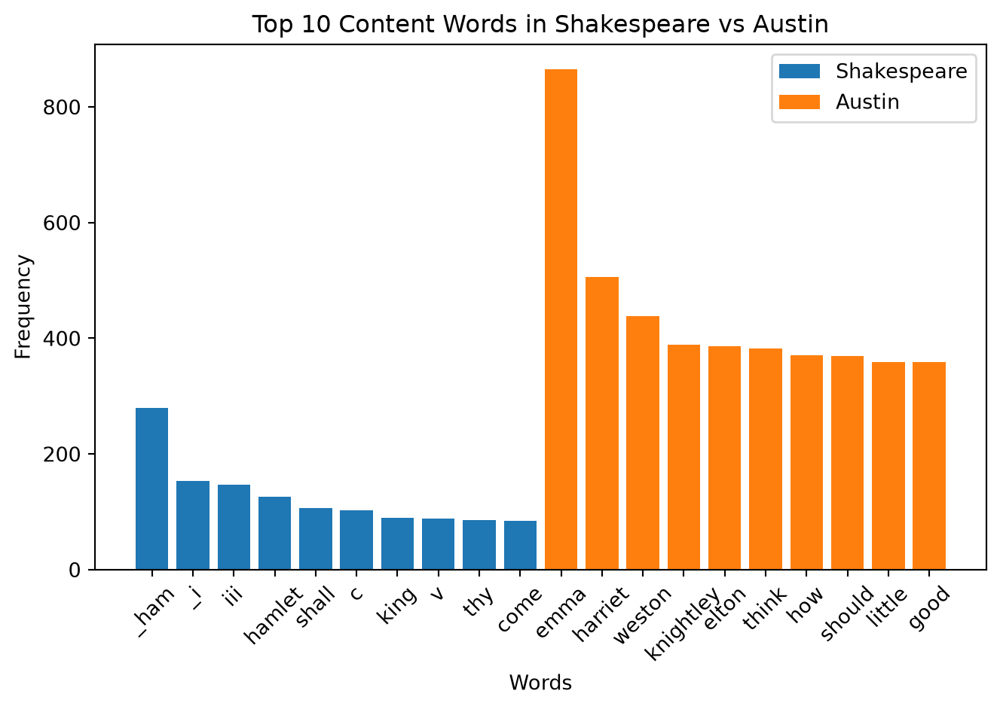
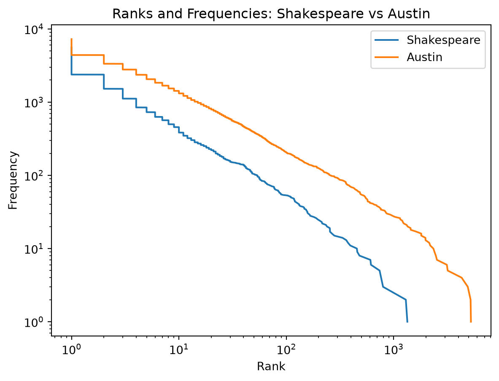

Code
###Setup and Cleaning
import urllib.request
try:
with open("../../data/gutenberg/hamlet.txt", "r", encoding="utf-8") as f:
hamlet_lines = f.readlines()
except FileNotFoundError:
print("File not found — does the ../../data/gutenberg/ folder exist?")
try:
with open("../../data/gutenberg/emma.txt", "r", encoding="utf-8") as f:
emma_lines = f.readlines()
except FileNotFoundError:
print("File not found — does the ../../data/gutenberg/ folder exist?")
while not hamlet_lines[0].startswith("*** START"):
hamlet_lines = hamlet_lines[1:] # chop off the first line
hamlet_lines = hamlet_lines[1:] # chop off the *** START line itself
while not emma_lines[0].startswith("*** START"):
emma_lines = emma_lines[1:] # chop off the first line
emma_lines = emma_lines[1:] # chop off the *** START line itself
print(hamlet_lines[0:5])
print(emma_lines[0:5])
while not hamlet_lines[-1].startswith("*** END"):
hamlet_lines = hamlet_lines[:-1] # chop off the last line
hamlet_lines = hamlet_lines[:-1] # chop off the *** END line itself
while not emma_lines[-1].startswith("*** END"):
emma_lines = emma_lines[:-1] # chop off the last line
emma_lines = emma_lines[:-1] # chop off the *** END line itself
hamlet_text = "".join(hamlet_lines)
emma_text = "".join(emma_lines)
print(hamlet_lines[-5:])
print(emma_lines[-5:])
from itertools import count
import re
hamlet_words = re.split(r"[\W]+", hamlet_text.lower())
hamlet_words = [w for w in hamlet_words if w != ""]
emma_words = re.split(r"[\W]+", emma_text.lower())
emma_words = [w for w in emma_words if w != ""]
print(hamlet_words[0:10])
print(emma_words[0:10])
#This is me checking my work
###Tokens, Types, and a Fair Comparison
tokens = len(hamlet_words) #35361
types = len(set(hamlet_words)) #5586
ttr = types/tokens
print("Hamlet TTR:", ttr) #0.158
tokens = len(emma_words) #162,095
types = len(set(emma_words)) #7255
ttr = types/tokens
print("Emma TTR:", ttr) #0.045
# Even though Hamlet is a shorter text its ttr is higher (0.2%) than Emaa (0.1%).
# This renders the type token ration or the number of words (tokens) compared to the number of unique words (types). You find the tokens by using len or length to find the number of words. Then you turn _words into a set and then search the length to find types. Then divide the two to get the ttr.
tokens = len(hamlet_words [0:10000]) #10000
types = len(set(hamlet_words [0:10000]))#2427
ttr = types/tokens
print("Hamlet TTR (10,000 words):",ttr) #0.2427
tokens = len(emma_words[0:10000]) #10000
types = len(set(emma_words[0:10000])) #1783
ttr = types/tokens
print("Emma TTR (10,000 words):",ttr) #0.1783
# So, in the comparison of these two texts its clear that they are outliers in terms of the average comparison but I think in general the second one creates a cotrol variable by having them have the same initial word count because of course on average the longer text will have a higher ttr because you are going to have to use the word the alot more and all other stop words meaning they are less unique.
# This does basically the same as before burt you create a range in the brackets to just do the first 10,000 words to make sure your acuratlly representing the ttr and not creating inflation.
hamlet_word_len_total = 0
for w in hamlet_words:
hamlet_word_len_total += len(w)
hamlet_avg_word_len = hamlet_word_len_total / len(hamlet_words)
emma_word_len_total = 0
for w in emma_words:
emma_word_len_total += len(w)
emma_avg_word_len = emma_word_len_total / len(emma_words)
print("Hamlet Average Word Length:", hamlet_avg_word_len) #3.9878963
print("Emma Average Word Length:", emma_avg_word_len) #4.2298467
# This code is asking for the average word length in each of these texts. You start with defining each of the word lengths as 0 you look for a word or w _words then do add the length of that word to _word_len_total. Then you divide that _word_len_total by the length of _words.
### Affixes, Dialogue, and Common Words
print(type(hamlet_words))
print(type(emma_words))
#This is again me checking my work
ly_suffix = [w for w in hamlet_words if w.endswith("ly")]
print("Number of -ly suffixes in Hamlet:", len(ly_suffix)) #264
rate = 264 / 35361 * 1000
print("Rate of -ly suffixes in Hamlet:", rate) #7.5 per 1000
ly_suffix = [w for w in emma_words if w.endswith("ly")]
print("Number of -ly suffixes in Emma:", len(ly_suffix)) #2810
rate = 2810 / 162095 * 1000
print("Rate of -ly suffixes in Emma:", rate) #17.3 per 1000
# There are also some words like family which are nouns and words like clearly that are adjectives, so not just adverbs.
ness_suffix = [w for w in hamlet_words if w.endswith("ness")]
print("Number of -ness suffixes in Hamlet:", len(ness_suffix)) #54
rate = 54 / 35361 * 1000
print("Rate of -ness suffixes in Hamlet:", rate) #1.5 per 1000
ness_suffix = [w for w in emma_words if w.endswith("ness")]
print("Number of -ness suffixes in Emma:", len(ness_suffix)) #482
rate = 482 / 162095 * 1000
print("Rate of -ness suffixes in Emma:]", rate) #2.97 per 1000
ful_suffix = [w for w in hamlet_words if w.endswith("ful")]
print("Number of -ful suffixes in Hamlet:", len(ful_suffix)) #31
rate = 31 / 35361 * 1000
print("Rate of -ful suffixes in Hamlet:", rate) #0.9 per 1000
ful_suffix = [w for w in emma_words if w.endswith("ful")]
print("Number of -ful suffixes in Emma:", len(ful_suffix)) #257
rate = 257 / 162095 * 1000
print("Rate of -ful suffixes in Emma:", rate) #1.6 per 1000
ment_suffix = [w for w in hamlet_words if w.endswith("ment")]
print("Number of -ment suffixes in Hamlet:", len(ment_suffix)) #66
rate = 66 / 35361 * 1000
print("Rate of -ment suffixes in Hamlet:", rate) #1.9 per 1000
ment_suffix = [w for w in emma_words if w.endswith("ment")]
print("Number of -ment suffixes in Emma:", len(ment_suffix)) #529
rate = 529 / 162095 * 1000
print("Rate of -ment suffixes in Emma:", rate) #3.3 per 1000
# These are all basically the same code with slightly diffrent search terms. But basically you use a list comprension to look for words in _words is that word .endswith whatever suffix is in the parentheses. And then you print the number by using length and then the above variable. Then you do an equation that calculates the # of words with said suffix divided by the whole texts word count and times 100 to find out aspproximatly how many times that suffix appears every 1000 words. I used google their AI to get me the initial code but then I understood it and was able to change to where it worked for the project.
item_count = 0
for item in hamlet_words:
item_count += 1 # lines: 4225
print("The number of lines in Hamlet is: 4225")
item_count = 0
for item in emma_words:
item_count += 1 # lines: 13857
print("The number of lines in Emma is: 13857")
# This counts how many lines are in each text. You start with assigning item_count to 0 than for each line in _words do item_count + 1 until you find the number of lines.
quote_count = 0
for item in hamlet_words:
if item[0] == '"' or item[0] == '“' or item[0] == '‘':
quote_count += 1 #lines that start with quotes: 7
print("Lines that start with quotes in Hamlet: 7")
rate = 7 / 4225 * 1000
print("Rate lines that start with quotes in Hamlet:", rate) #1.7 per 1000
quote_count = 0
for item in emma_words:
if item[0] == '"' or item[0] == '“' or item[0] == '‘':
quote_count += 1 #lines that start with quotes: 1448
print("Lines that start with quotes in Emma: 1448")
rate = 1448 / 13857 * 1000
print("Rate lines that start with quotes in Emma:", rate) #104.5 per 1000
# We skip ' because it's and apostrophe and would ruin the data
# You do basically the same thing when searching for the quotes but only if the line starts with some kind of quotation mark to find the number of quote lines, so you use if and the item[0] to signify the beginning, equals in the not variable sense and then a kind of quotations. The you use or and do the same thing so you can make sure you find the kind of quotyes your author uses. Then you do the rate equation again.
from collections import Counter
stopwords = ["the", "to", "and", "of", "a", "her", "i", "in", "was", "it",
"she", "he", "be", "that", "you", "not", "had", "as", "his", "for",
"with", "is", "have", "but", "at", "so", "all", "my", "been", "him",
"on", "by", "could", "would", "very", "no", "what", "which", "they",
"were", "there", "me", "an", "must", "this", "said", "from", "or",
"will", "any", "much", "than", "such", "their", "them", "if", "do",
"did", "one", "when", "your", "more", "are", "we", "who", "up",
"out", "down", "into", "s", "t" , '_' ,'footnote', 'chapter', 'mr', 'mrs', 'miss',
'ms', 'dr', 'professor', 'sir', 'madam', 'lady', 'lord', 'e', 'r', 'd', 'l', 'h', 'o']
content_words = [w for w in hamlet_words if w not in stopwords]
hamlet_counter = Counter(content_words)
top10 = hamlet_counter.most_common(10)
print("The top 10 most popular words in Hamlet are:", top10)
#[('_ham', 280), ('_i', 154), ('iii', 147), ('hamlet', 126), ('shall', 106), ('c', 103), ('king', 89), ('v', 88), ('thy', 86), ('come', 84)]
# The most common words in hamlet one tell me who the main character is, two tells me that this play is written or takes place in old english, and three is a play so it has odd formating and stage instruction baked into the writing
stopwords = ["the", "to", "and", "of", "a", "her", "i", "in", "was", "it",
"she", "he", "be", "that", "you", "not", "had", "as", "his", "for",
"with", "is", "have", "but", "at", "so", "all", "my", "been", "him",
"on", "by", "could", "would", "very", "no", "what", "which", "they",
"were", "there", "me", "an", "must", "this", "said", "from", "or",
"will", "any", "much", "than", "such", "their", "them", "if", "do",
"did", "one", "when", "your", "more", "are", "we", "who", "up",
"out", "down", "into", "s", "t" , '_' ,'footnote', 'chapter', 'mr', 'mrs', 'miss', 'ms', 'dr', 'professor', 'sir', 'madam', 'lady', 'lord',
'every', 'am', 'well', 'thing']
content_words = [w for w in emma_words if w not in stopwords]
emma_counter = Counter(content_words)
top10 = emma_counter.most_common(10)
print("The top 10 most popular words in Emma are:", top10)
#[('emma', 865), ('harriet', 506), ('weston', 439), ('knightley', 389), ('elton', 386), ('think', 383), ('how',371), ('should', 369), ('little', 359), ('good', 359)]
# The top 10 words of Emaa tells me three to four of the main characters and gives some insite into the mundanity of the book
# This imports counter, than identifies a bunch of stop words that pop up and scew data. Then you use a list comprension to say that content words are all words (w's) in _words that aren't stopwords. Then you use counter, which you previously imported, to count all of the content words in _words and how frequently they appear in order of frequency. Then you create the top_10 variable where you use .most_common(10) to identify the 10 most commonly used words.
###Visulaization
import matplotlib.pyplot as plt
emma_top10 = emma_counter.most_common(10)
hamlet_top10 = hamlet_counter.most_common(10)
emma_content_labels = [pair[0] for pair in emma_top10]
hamlet_content_labels = [pair[0] for pair in hamlet_top10]
emma_content_freqs = [pair[1] for pair in emma_top10]
hamlet_content_freqs = [pair[1] for pair in hamlet_top10]
plt.bar(hamlet_content_labels, hamlet_content_freqs, label="Shakespeare")
plt.bar(emma_content_labels, emma_content_freqs, label="Austin")
plt.title("Top 10 Content Words in Shakespeare vs Austin")
plt.xlabel("Words")
plt.ylabel("Frequency")
plt.xticks(rotation=45)
plt.tight_layout()
plt.savefig("hamlet_vs_emma_content_top10.png")
plt.legend()
plt.show()
# First you import matplot for plt. Then I am measuring top 10 words in the books so I assign _top10 to the _counter file for each and then again ther .most_common(10). The create _content_labels where it takes the first half of the pairs in _top10 which is the word. Then you create _content_freqs which takes the second half of hte pair in _top10 which is the frequency of the word. Now that you have your variables you assign them to .bars which creates the bar graph in the visualization and labels it with the authors name. The create a title, axises labels, rotate the words, change the layout, create a name for the file, create a legend, than display it.
hamlet_freqs = [pair[1] for pair in Counter(hamlet_words).most_common()]
emma_freqs = [pair[1] for pair in Counter(emma_words).most_common()]
hamlet_ranks = range(1, len(hamlet_freqs) + 1)
emma_ranks = range(1, len(emma_freqs) + 1)
plt.plot(hamlet_freqs, hamlet_ranks, label="Shakespeare")
plt.plot(emma_freqs, emma_ranks, label="Austin")
plt.title("Ranks and Frequencies: Shakespeare vs Austin")
plt.xlabel("Rank")
plt.ylabel("Frequency")
plt.xscale("log")
plt.yscale("log")
plt.savefig("hamlet_vs_emma_content_top10_line.png")
plt.legend()
plt.show()
# This is meant to be a line graph in a logerithmic form, demonstrates Zipf's law (that the most frequent word in a book is twice as common as the second most frequent and 3x's as much as the third most common and so on), this means its comparing rank vs frequency. This starts with looking at the ferquency of all words within a text so looking again at the second half of the pair from counter. _words and then .most_common(). Then you look at ranks, which finds ranks the the frequency of words within a book by creating a range from 1 through the number of _freqs plus 1 to find the ranking of frequently used words. Then you plot those measurements on the chart and label them. Then create a title, axis labels, you use a log scale on both the x and y axis, create a file name, create a legend, and show.
### The Verdict
# The thing that makes each authors style distinctive is the purpose of there writing and what they are writing for. Jane Austin is writing a novel and it is reflected in what her common stop words are and then what her common contebt words. This is similarly how you can identify the Shakespeare is writing a script to a play. The leaset useful measure of comparison was the assesment on affixes because they both use a many of each affix with similar distribution and they weren't necessarily reflective of a stylistic choice in any real regard. If I was handed a random chapter I would reach for word frequency because it usually gives some insight in purpose of a text and maybe some other aspects like temes or characters which can also give you some setting. You can find out alot about a book from its frequently used words.
### Reflection
#The biggest diffrence from doing this assignment in class verses by myself is how fresh the information is in my brain because in class I feel like I have a much firmer grasp on conspts then it feels at ho,e and I have kind of a fall back of asking questions if I'm in class. But when I hit a block often I can only solve it at home when I try 15 diffrent things and have the time to really focus a concept verses trying to stay with the flow of class. I feel like the most intresting part of this homework project is the Zipf's law stuff. I never knew the property of language and it helps understand the scale of stop words in language and its cool that its the same across languages. For this I leaned heavily on google and every single slide show we have done before just scouring for the parts of this project we have done before or even kind of done before. By the end I tried not to lean to heavily on google/ gemini because I want to make sure I understood the concepts myself but overall I was really just trying to make sure it all got done without toppling like a house of cards which it did a few times.['\n', '\n', '\n', '\n', " Transcriber's Note:\n"]
['\n', '\n', '\n', '\n', 'Emma\n']
[' victorious cock.]\n', '\n', '\n', '\n', '\n']
['FINIS\n', '\n', '\n', '\n', '\n']
['transcriber', 's', 'note', 'this', 'is', 'a', 'heavily', 'edited', 'version', 'of']
['emma', 'by', 'jane', 'austen', 'contents', 'volume', 'i', 'chapter', 'i', 'chapter']
Hamlet TTR: 0.1579706456265377
Emma TTR: 0.04475770381566365
Hamlet TTR (10,000 words): 0.2427
Emma TTR (10,000 words): 0.1783
Hamlet Average Word Length: 3.9878962699018694
Emma Average Word Length: 4.229846694839446
<class 'list'>
<class 'list'>
Number of -ly suffixes in Hamlet: 264
Rate of -ly suffixes in Hamlet: 7.465852210061932
Number of -ly suffixes in Emma: 2810
Rate of -ly suffixes in Emma: 17.33551312501928
Number of -ness suffixes in Hamlet: 54
Rate of -ness suffixes in Hamlet: 1.5271061338763043
Number of -ness suffixes in Emma: 482
Rate of -ness suffixes in Emma:] 2.9735648847897838
Number of -ful suffixes in Hamlet: 31
Rate of -ful suffixes in Hamlet: 0.8766720398178784
Number of -ful suffixes in Emma: 257
Rate of -ful suffixes in Emma: 1.5854899904377062
Number of -ment suffixes in Hamlet: 66
Rate of -ment suffixes in Hamlet: 1.866463052515483
Number of -ment suffixes in Emma: 529
Rate of -ment suffixes in Emma: 3.263518307165551
The number of lines in Hamlet is: 4225
The number of lines in Emma is: 13857
Lines that start with quotes in Hamlet: 7
Rate lines that start with quotes in Hamlet: 1.6568047337278107
Lines that start with quotes in Emma: 1448
Rate lines that start with quotes in Emma: 104.49592263837772
The top 10 most popular words in Hamlet are: [('_ham', 280), ('_i', 154), ('iii', 147), ('hamlet', 126), ('shall', 106), ('c', 103), ('king', 89), ('v', 88), ('thy', 86), ('come', 84)]
The top 10 most popular words in Emma are: [('emma', 865), ('harriet', 506), ('weston', 439), ('knightley', 389), ('elton', 386), ('think', 383), ('how', 371), ('should', 369), ('little', 359), ('good', 359)]
